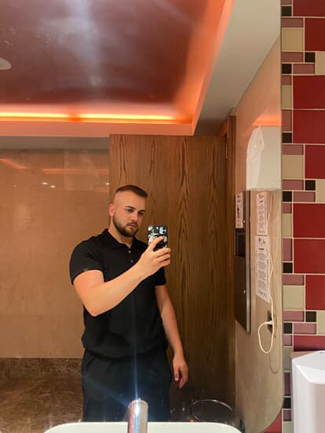
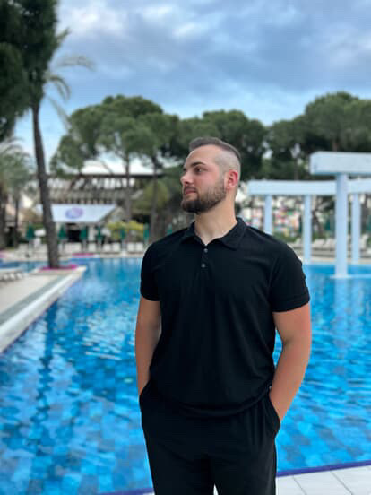

Kuaförlük sanatındaki profesyonel yolculuğumu ve beni daha yakından tanıyın

8 yılı aşkın deneyime sahip profesyonel bir kuaför ve stilistim. Tutkum, her müşterinin kişiliğini yansıtan özgün stiller yaratmaktır.
Becerilerimi sürekli geliştiriyor, yeni teknikler ve trendleri takip ederek size en modern ve şık saç çözümlerini sunuyorum.
Çalışmalarımda yalnızca yüksek kaliteli profesyonel ürünler kullanıyorum; bu ürünler hem harika bir görünüm sağlar hem de saç sağlığınızı korur.
Kuaförlük sanatındaki profesyonel yolum ve başarılarım
VIP müşterilerle çalışma, eğitimler düzenleme, özgün kesim ve renklendirme teknikleri geliştirme. İmaj dönüşümlerinde uzmanlık.
Fotoğraf çekimleri ve moda defileleri için görsel oluşturma, yeni başlayanlara mentorluk, ileri düzey renklendirme bilgisi.
Her türlü kuaförlük hizmeti, farklı saç tipleriyle çalışma, kesim ve boya tekniklerinde ustalaşma.
Temel ve ileri düzey kuaförlük becerileri kazanımı, saç anatomisi, renk bilimi ve stil eğitimi.
Benzersiz stilinizi yaratmaya profesyonel yaklaşım
Stil seçimi, yıkama, kesim, şekillendirme
Danışma, yıkama, kesim, şekillendirme
12 yaşa kadar çocuklar için
Bireysel tasarım, güncel trendler
Kalıcı boya, tüm uzunluklar
Balayage, ombre, shatush, airtouch
Açma, tonlama
Renk koruma veya düzeltme için
Hafta içi için hızlı ve etkili şekillendirme
Özel etkinlikler ve davetler için
Deneme modeli dahil
Hollywood, dokulu, doğal görünüm
* Nihai fiyat, danışma sırasında belirlenir ve saçın uzunluğu, yoğunluğu ve işin karmaşıklığına bağlıdır
Danışma için randevu alınBenzersiz görünümler yaratmadaki en iyi işlerim ve başarılarım

Daha fazla çalışmamı görmek ister misiniz?
Instagram sayfamı ziyaret edinBenimle çalışmanın sonuçları hakkında müşterilerimin ne düşündüğünü öğrenin
Yaratıcı görünüm oluştururken izlediğim çalışma prensiplerim ve değerlerim
Benim ana amacım sadece güzel bir saç modeli yaratmak değil, aynı zamanda size kişiliğinizi ifade etme fırsatı sunarak tarzınızı bulmanıza yardımcı olmaktır. Doğru seçilmiş saç kesimi ve renk, birini tamamen dönüştürebilir, güven kazandırabilir ve doğal güzelliği vurgulayabilir.
Her müşteri benzersizdir. Yüz hatlarını, saç yapısını ve yaşam tarzını dikkatlice inceleyerek mükemmel bir görünüm oluşturuyorum. Şablon çözümler yok — sadece kişiye özel bir yaklaşım.
Doğaya saygılı ve hayvanlar üzerinde test yapmayan markaların kozmetik ve malzemelerini tercih ediyorum. Müşterilerim, güzelliklerinin çevreye zarar vermediğinden emin olabilirler.
Kuaförlük sanatı sürekli gelişiyor. Yeni teknikler öğreniyor, trendleri takip ediyor ve yenilikçi yöntemleri uygulayarak size en modern çözümleri sunuyorum.
Her detaya özen gösteriyor ve sonuç mükemmel olana kadar durmuyorum. Memnuniyetiniz benim önceliğimdir ve kusursuz bir görünüm için her türlü çabayı göstermeye hazırım.
"Sadece saç modelleri yaratmakla kalmıyorum — insanlara doğal güzelliklerini keşfetmelerine ve kendileriyle uyum içinde olmalarına yardımcı oluyorum."